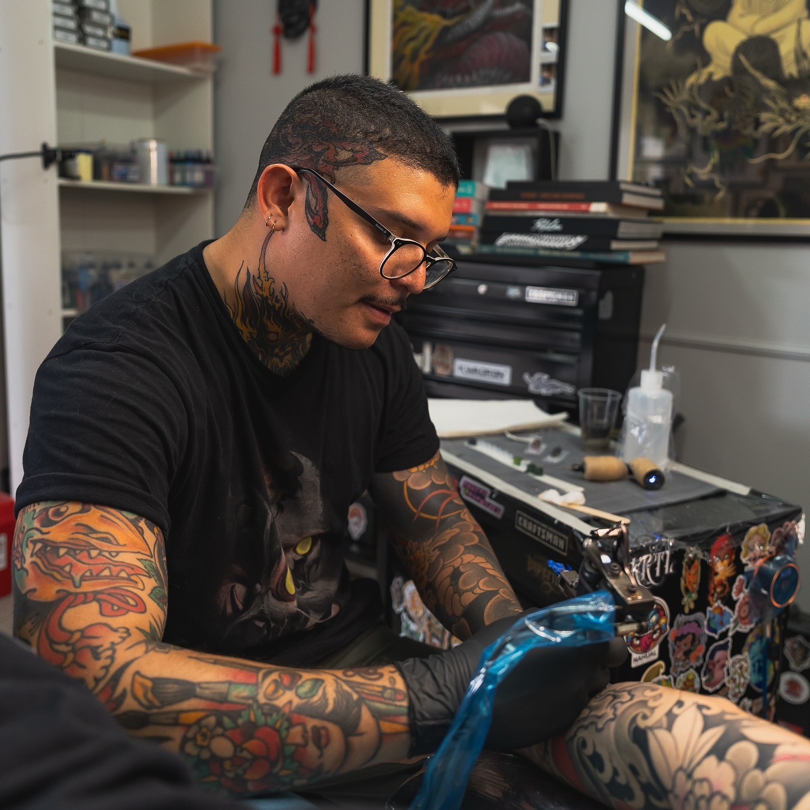

Sobre mí About Me
Hola, mi nombre es Steve Quesada. Soy tatuador profesional y cuento con más de seis años de experiencia en el mundo del tatuaje. Hello, my name is Steve Quesada. I am a professional tattoo artist with over six years of experience in the tattoo industry.
Desde pequeño siempre me interesaron el dibujo y las artes visuales. Ese interés me llevó a estudiar Docencia Artística y, con el tiempo, descubrí el tatuaje. Recuerdo que pude comprar mi primer kit gracias a un préstamo que me hizo un primo. Lo que comenzó como una simple curiosidad por este oficio terminó convirtiéndose en mi profesión y en mi mayor pasión. Since I was a child, I have always been interested in drawing and visual arts. That interest led me to study Art Education, and eventually, I discovered tattooing. I remember buying my first kit thanks to a loan from my cousin. What started as simple curiosity for this trade ended up becoming my profession and my greatest passion.
Empecé tatuando desde mi casa, pero siempre tuve la meta de trabajar en un estudio profesional. Eso me llevó a formar parte de distintos estudios y, actualmente, trabajo en GoodFellas Tattoo, en Heredia, Costa Rica. I started tattooing from home, but I always had the goal of working in a professional studio. That led me to join different studios, and currently, I work at GoodFellas Tattoo, in Heredia, Costa Rica.
Además, he tenido la oportunidad de viajar a convenciones y conocer a artistas muy influyentes de la industria. Cada una de esas experiencias ha enriquecido mi aprendizaje y me permite ofrecer un trabajo de mayor calidad a cada uno de mis clientes. Additionally, I have had the opportunity to travel to conventions and meet highly influential artists in the industry. Each of those experiences has enriched my learning and allows me to offer higher quality work to each of my clients.
Hoy me especializo principalmente en tatuajes de estilo japonés y motivos inspirados en esta tradición, aunque también realizo otros estilos. La estética japonesa es la que más me apasiona y en la que concentro la mayor parte de mi trabajo. Today, I specialize mainly in Japanese-style tattoos and motifs inspired by this tradition, although I also perform other styles. The Japanese aesthetic is what I am most passionate about and where I concentrate most of my work.
Si te gustaría tatuarte conmigo o tienes una idea que quieres desarrollar, será un gusto asesorarte y brindarte toda la información necesaria para agendar tu cita. If you would like to get a tattoo with me or have an idea you want to develop, it will be a pleasure to advise you and provide you with all the necessary information to schedule your appointment.